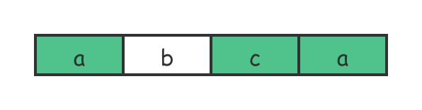
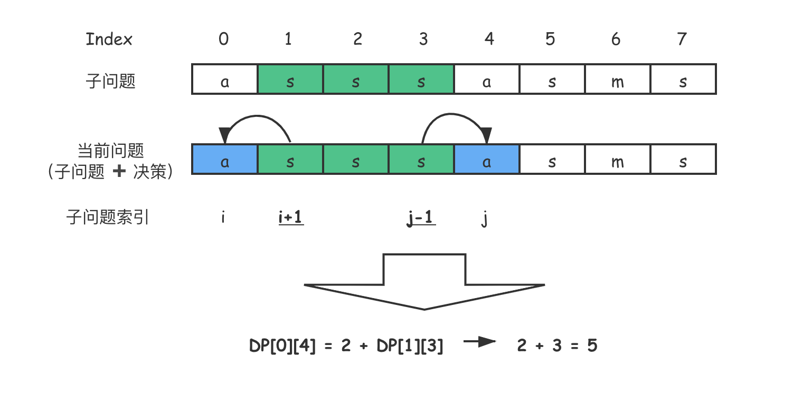
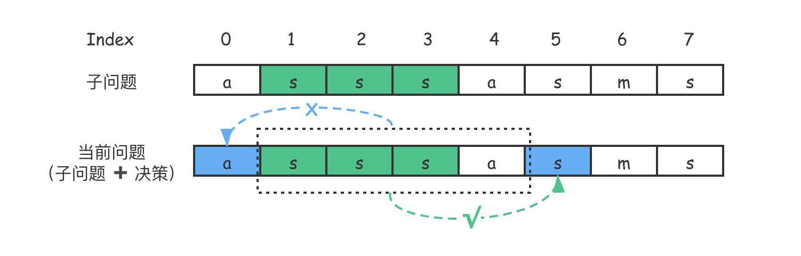
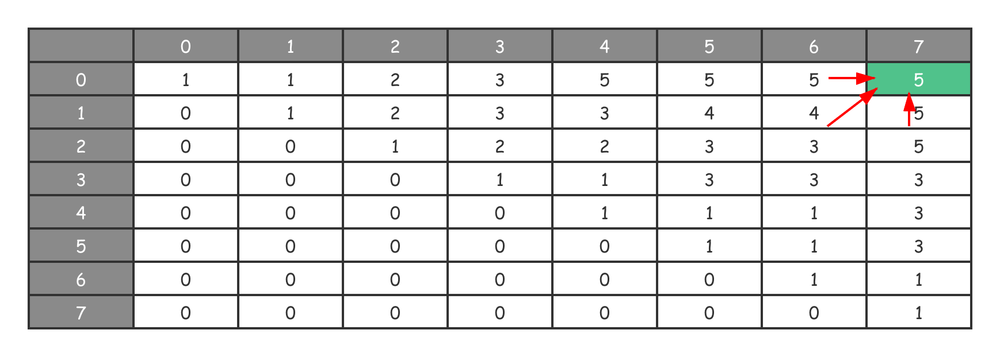
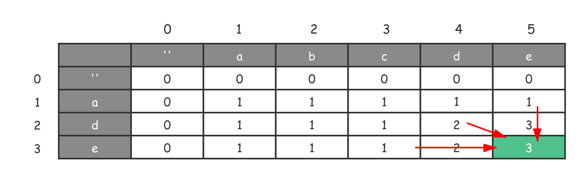

- 00 导读 动态规划问题纷繁复杂，如何系统学习和掌握它？.md.html
- 00 开篇词 为什么大厂都爱考动态规划？.md.html
- 01 硬币找零问题：从贪心算法说起.md.html
- 02 暴力递归：当贪心失效了怎么办？.md.html
- 03 备忘录：如何避免递归中的重复计算？.md.html
- 04 动态规划：完美解决硬币找零.md.html
- 05 面试即正义第一期：什么样的问题应该使用动态规划？.md.html
- 06 0-1背包：动态规划的Hello World.md.html
- 07 完全背包：深入理解背包问题.md.html
- 08 子数组问题：从解决动归问题套路到实践解题思路.md.html
- 09 子序列问题：详解重要的一大类动态规划问题.md.html
- 10 面试即正义第二期：常见的动态规划面试题串烧.md.html
- 11 动态规划新问题1：攻破最长递增子序列问题.md.html
- 12 动态规划新问题2：攻破最大子数组问题.md.html
- 13 动态规划算法设计的关键：最优子结构与状态依赖.md.html
- 14 面试即正义第三期：刷题指南，熟能生巧.md.html
- 15 课程回顾与总结（上）.md.html
- 16 课程回顾与总结（下）.md.html
- 加餐 买卖股票：常见且必考的动态规划面试题.md.html
- 结束语 在我家的后院养长颈鹿.md.html
- 捐赠
09 子序列问题：详解重要的一大类动态规划问题
你好，我是卢誉声。
我们曾在上一课中提到，有两类重要的动态规划问题需要掌握，其中一个是子数组问题，另一个是子序列问题。今天，我们将深入讲解动态规划中的另一个经典问题，即子序列问题。
相较于子数组问题而言，子序列问题要更复杂一些，这是由子序列的特性决定的。不过有一点比较类似，那就是我们仍然需要小心定义备忘录结构和其对应值的含义。
你应该注意到了，我们把子数组问题和子序列问题放在一块儿讲，这意味着它们之间是有联系的。因此，在开始今天的课程前，我提出这样一个问题：子数组和子序列问题在求解时有什么异同呢？
接下来就让我们带着这个问题，开始今天的学习之旅吧。
什么是子序列问题？
类似的，我们要明确一下什么是动态规划中的子序列问题。首先，相较于子数组问题而言，子序列问题要更复杂一些。这是因为，子数组问题是连续的，而子序列问题是不连续的。比如说字符串 “I wanna keep a giraffe in my backyard” 的一种子序列就可以是 “Igbackd”。
因此，你可以看到，子序列不再要求答案是一个连续的串。即便用穷举的思路求解问题，我们都不一定知道该从何下手解决。特别的，当涉及到两个数组或字符串作为输入的情况时，如果没有处理经验，真的不容易想到解法。
其次，一个字符串的子序列，是由原字符串在不改变字符的相对顺序的情况下删除某些字符（也可以不删除任何字符）后组成的新字符串。举个例子，“ace” 是 “abcde” 的子序列，但是 “aec” 就不是 “abcde” 的子序列。
再次，如果一个问题涉及以下特征，那么它大概率需要使用动态规划来进行求解：
- 题目涉及子序列；
- 问题符合动归典型特征，特别是求“最”优解问题（最大值和最小值）；
- 题目的答案是题设数组的子序列，或者来源于子序列。
其实，一旦技术面试问题涉及子序列，你都几乎不需要考虑动态规划以外的解法了。为什么这么说呢？你考虑一下，一个数组或字符串子序列的组合数肯定是指数级别的，如果想依赖纯粹的穷举来进行求解，从时间复杂度上看，几乎没有求解的可能性。
所以啊，我们虽然说动态规划中的子序列问题是经典动归问题，但它不同于0-1背包这种经典问题，事实上它并不好解决。不过我们都学到这了，你应该坚信再难的动归问题都应该有模板可以应对。
没错，今天就让我们用两个经典的案例，来找出解决子序列问题的思路。
最长回文子序列
如果问题含有最长子序列这样的提法，那么它一定是动态规划问题。现在，先让我们一起来看一看最长“回文”子序列问题的描述。
问题：给定一个字符串 s ，找到其中最长的回文子序列，并返回该序列的长度。可以假设 s 的最大长度为 1000。
示例1：
输入："asssasms"
输出：5
解释：一个可能的最长回文子序列为 "sssss"，另一种可能的答案是 "asssa"。
示例2：
输入："abba"
输出：4
解释：有三个子序列满足题设要求："aa"、"bb" 和 "abba"，因此答案为 4。
算法问题分析
还记得在解决回文子串时给出的那个简单例子么？我们当时有提到过 “子数组问题的特征是答案也必须是连续的”。显然，子序列问题的特征发生了变化，它的答案可以是连续的，也可以是不连续的。

我现在输入的字符串是 “abca”，那么 “aca” 是原问题的答案吗？在子数组问题中不是；但现在，“aca” 是原问题的答案了。
我在前面曾提到过涉及子序列的问题基本上全部都是动态规划问题。那么这个问题符合动态规划问题的特征吗？我们来看一下：
- 重叠子问题：在穷举的过程中肯定存在重复计算的问题。这是因为各种排列组合间肯定存在重叠子问题的情况；
- 无后效性：对不是最长的回文子序列来说，它一定被包含在更长的回文子序列中。而更长的回文子序列不会包含在较短的回文子序列中，依赖是单向的；
- 最优子结构：对整个字符串，其最长的回文子序列肯定包含了更短长度字符串中的回文子序列，因此子问题可以递归求解。
既然是动归问题，接下来我们看看该如何写出状态转移方程吧。
写出状态转移方程
首先，我们先来确定初始化状态。从问题的示例就可以看出（当然也很容易想到），单个字符一定是它自己的回文。
接着，再来确定状态参数。跟回文子串问题类似，我们需要确定子序列的位置：一个是起始位置，另一个是结束位置。在算法的执行过程中，起始和结束位置是变化的，因此它们是状态参数。
既然有两个状态，我们用二维数组来定义备忘录。设 \(DP\[i\]\[j\]\)，其对应的值是字符串 \(i…j\) 中最长回文子序列的长度。你可能会问，为何要这样设计备忘录的定义呢？我们曾在讲解子数组问题时讨论了 “备忘录定义对编写代码的影响”，这里的影响其实并不直接是代码，主要影响的是状态转移方程的设计（因为有了状态转移方程，才能编写代码嘛）。
现在让我们回到动态规划问题的本质问题上来。动态规划是数学归纳法的一种很好的体现，即如何从已知的答案推导出未知的部分。回到最长回文子序列问题上来，如果知道了 \(s\[i+1 … j-1\]\) 中最长回文子序列的长度（即 \(DP\[i+1\]\[j-1\]\)），我们能通过它推导出 \(s\[i … j\]\) 中最长回文子序列的长度（即 \(DP\[i\]\[j\]\)）吗？

根据以上决策示意图，我们显然可以通过 \(DP\[i+1\]\[j-1\]\) 求出 \(DP\[i\]\[j\]\)。这是因为状态转移是连续的，我们可以通过向左移动一位或向右移动一位，得到更大规模子问题的答案。
那么让状态转移的决策是什么呢？其实这里的决策跟回文子串问题类似，当前子问题的答案就是通过前面的子问题 ➕ 当前的决策推导出来的。
而当前的决策就是：计算出向子问题的两边分别扩充一个元素后得到的答案。你可以参考示意图来更好地理解这个状态转移过程。
一切就绪了，现在就可以给出回文子串问题的状态转移方程了。我们仍然把字符串当作数组来访问，并考虑当 \(s\[i\] == s\[j\]\) 和 \(s\[i\] != s\[j\]\) 两种情况进行讨论：
- 如果 \(s\[i\] == s\[j\]\)（示意图是相等的），那么 \(DP\[i\]\[j\] = 2 + DP\[i+1\]\[j-1\]\)；
- 如果 \(s\[i\] != s\[j\]\)，就意味着 \(s\[i\]\) 和 \(s\[j\]\) 是不可能同时出现在 \(s\[i … j\]\) 的最⻓回文子序列中的。这时我们该怎么做？这里需要进一步作出决策。
既然 \(s\[i\] != s\[j\]\)，我们可以考虑把 \(s\[i\]\) 和 \(s\[j\]\) 分别放入 \(s\[i+1 … j-1\]\) 中试试，这样就会产生两个子状态，其中状态A：\(s\[i … j-1\]\)；状态B：\(s\[i+1 … j\]\)。接着，再看看哪个子串产生的回文子序列更⻓，即 max(状态A, 状态B)。

这个过程可以用以上示意图进行描述。在示意图中，状态A：\(DP\[0\]\[4\] = 5\)；状态B：\(DP\[1\]\[5\] = 4\)。因此，这里通过决策后得到的状态应该是 max(状态A, 状态B) = 5。
\[DP(i, j)=\\left\\{\\begin{array}{c}- 2 + DP\[i+1\]\[j-1\],\\ s\[i\]==s\[j\]\\\\\\- max(DP\[i+1\]\[j\], DP\[i\]\[j-1\]),\\ s\[i\] \\ne s\[j\]- \\end{array}\\right.\]
编写代码进行求解
所有先决条件都解决了，现在我们来看一下如何用动归来求解此问题，我直接给出代码。
Java 实现：
int getLongestPalindromeSubseq(String s) {
int n = s.length(); if (0 == n) return 0;
int[][] dp = new int[n][n];
for (int[] row : dp) { Arrays.fill(row, 0); }
for (int i = 0; i < n; i++) dp[i][i] = 1; // 初始化状态
for (int i = n-1; i >= 0; i--) {
for (int j = i+1; j < n; j++) {
if (s.charAt(i)==s.charAt(j)) {
dp[i][j] = 2 + dp[i+1][j-1];
} else {
dp[i][j] = Math.max(dp[i+1][j], dp[i][j-1]); // 作出进一步决策
}
}
}
return dp[0][n-1]; // 输出答案
}
C++ 实现：
int GetLongestPalindromeSubseq(string s) {
int n = static_cast<int>(s.size());
if (0 == n) return 0;
int dp[n][n]; memset(dp, 0, sizeof(dp));
for (int i = 0; i < n; i++) dp[i][i] = 1; // 初始化状态
for (int i = n-1; i >= 0; i--) {
for (int j = i+1; j < n; j++) {
if (s[i]==s[j]) {
dp[i][j] = 2 + dp[i+1][j-1];
} else {
dp[i][j] = max(dp[i+1][j], dp[i][j-1]); // 作出进一步决策
}
}
}
return dp[0][n-1]; // 输出答案
}
在代码实现中，我们先进行了初始化状态的操作，将备忘录初始化为全 0 （编程习惯）。此外，单个字符一定是它自己的回文，因此备忘录中的对角线都是 1。
除此之外，你有没有发现这里对字符串迭代的顺序作了特别处理？没错，这是刻意为之的。为什么我们需要这样迭代字符串呢？这就涉及到了动态规划的计算方向问题了。
这是我们第一次在专栏中提出计算方向的概念，这是彻底理解动态规划问题的重中之重。如果你仔细阅读了之前课程中的状态转移图，你就会发现，我曾多次在图中用红色的箭头标出状态转移的方向。
事实上，那就是计算方向了，只不过对于我们之前遇到的问题来说，都是从左上到右下进行计算的。
对于回文子序列问题来说，根据备忘录的定义，由于我们最终需要的答案存放在 \(DP\[0\]\[n-1\]\)中，因此需要从最右下角反向推导：\(DP\[i\]\[j\]\) 需要的是其左侧 \(DP\[i\]\[j-1\]\)、左下角 \(DP\[i+1\]\[j-1\]\) 以及正下方 \(DP\[i+1\]\[j\]\) 的值来满足上述状态转移方程。

按照图片所展示的，\(DP\[0\]\[7\]\) 是根据 \(DP\[0\]\[6\]\)、\(DP\[1\]\[6\]\) 和 \(DP\[1\]\[7\]\) 推导出来的。
当前子问题的计算，需要依赖于哪些更小的子问题推导出来呢？寻找这个线索，你应该能够找出备忘录上的计算方向。
如果你还没有完全理解计算方向这个问题，也不需要担心，在后续的课程中我们还会遇到这个问题，而且还有专题去彻底讲清楚计算方向这个概念。
最长公共子序列
刚才我们有提到过，当涉及到两个数组或字符串作为输入的情况时，问题会变得比较复杂。而最长公共子序列（Longest Common Subsequence，LCS）问题就需要从两个字符串中寻找公共子序列。让我们来看看这个问题的描述。
问题：给定两个字符串 \(text1\) 和 \(text2\)，返回这两个字符串的最长公共子序列的长度。若这两个字符串没有公共子序列，则返回 0。其中：
- 1 ≤ text1.length ≤ 1000；
- 1 ≤ text2.length ≤ 1000；
- 输入的字符串只含有小写英文字符。
示例1：
输入：text1 = "abcde", text2 = "ade"
输出：3
解释：最长公共子序列是 "ade"，它的长度为 3。
示例2:
输入：text1 = "abc", text2 = "def"
输出：0
解释：显然，两个字符串没有公共子序列，返回 0。
算法问题分析
一般来说，在处理多个字符串的动态规划问题时，如果用数组作为备忘录的基本数据结构，那么它的维度则跟字符串的个数是线性相关的，即有几个字符串待解决，我们就创建几维的数组。当然也有例外，有些问题可能是将多个字符串进行合并，然后达到降维的目的。
一个数组或字符串子序列的组合数肯定是指数级别的。如果想依赖纯粹的穷举来进行求解，从时间复杂度上看，几乎没有求解的可能性。因此我们几乎可以“武断”地判断该问题需使用动态规划来进行求解。
你可以根据我们多次提到的判断方法，来判断该问题是否满足重叠子问题、无后效性和最优子结构这几个特征。然后，再接着往下看。
在这个问题中，我们需要创建一个二维数组作为我们的备忘录来存储中间计算的状态。既然已经确定了是二维数组，那么我们该如何理解备忘录的定义呢？
由于这个问题较为复杂，需要一些技巧，因此我在这里先给出备忘录的定义，解完题目之后我们再倒回来理解为何要这样设计。
写出状态转移方程
现在，我直接给出最长公共子序列问题的备忘录定义。\(DP\[i\]\[j\]\) 表示的是 \(text1\[0 … i\]\) 和 \(text2\[0 … j\]\) 的最长公共子序列的长度。
如果我们以示例 1 中的输入作为例子，就可以画出备忘录。

其中红色箭头展示了状态转移的计算方向。从图中可以得知，\(DP\[2\]\[4\] = 2\)，其含义是 “ad”（即 \(text2\[0 … 2\]\)）和 “abcd”（即 \(text1\[0 … 4\]\)）的最长公共子序列的长度；\(DP\[3\]\[5\] = 3\) 即 “ade”（即 \(text2\[0 … 3\]\)）和 “abcde”（即 \(text1\[0 … 5\]\)）的最长公共子序列的长度，即原问题的答案。
通过上图的展示，你可能会产生一个疑问，那就是为何要设计一个空字符作为计算开始的位置。这其实是初始化状态的一部分。当两个字符的其中一个为空串，或同时为空串时，原问题的答案肯定是 0。显然，一个字符串与空串的公共子序列肯定是空的。与此同时，这样的设计还能让真正的字符串迭代拥有能够推导计算的初始化值。
接着，我们再来看状态参数。根据前面的描述，我们用变量 \(i\) 和变量 \(j\) 描述了整个问题的求解空间，备忘录是基于二维数组构建的。因此，我们的状态参数就是变量 \(i\) 和变量 \(j\)。
最后，我们该如何决策状态的转移？对于 \(text1\) 和 \(text2\) 这两个字符串中的每个字符 \(text1\[i\]\) 和 \(text2\[j\]\)，其实只有两种选择：
- \(text1\[i-1\] == text2\[j-1\]\)，即当前遍历的两个字符在最长公共子序列中，此时 \(DP\[i\]\[j\] = 1 + DP\[i-1\]\[j-1\]\)；
- \(text1\[i-1\] != text2\[j-1\]\)，即当前遍历的两个字符至少有一个不在最长公共子序列中。仿照最长回文子序列的处理方法，由于两个字符至少有一个不在，因此我们需要丢弃一个。因此在不等的情况下，需要进一步作出决策。
由于我们要求的是最长公共子序列，因此哪个子问题的答案比较长，就留下谁：\(max(DP\[i-1\]\[j\]\), \(DP\[i\]\[j-1\]\))。通过以上线索，我们得出了求解该问题的状态转移方程。
\[DP(i, j)=\\left\\{\\begin{array}{c}- dp\[i\]\[j\] = 1 + dp\[i-1\]\[j-1\],\\ text1\[i\]==text2\[j\]\\\\\\- max(dp\[i-1\]\[j\], dp\[i\]\[j-1\]),\\ text1\[i\] \\ne text2\[j\]- \\end{array}\\right.\]
编写代码进行求解
我直接给出状态转移方程对应的求解代码。
Java 实现：
int getLongestCommonSubsequence(String text1, String text2) {
int m = text1.length(), n = text2.length();
int[][] dp = new int[m + 1][n + 1];
for (int[] row: dp) { Arrays.fill(row, 0); }
for (int j = 1; j <= n; j++) {
for (int i = 1; i <= m; i++) {
if (text2.charAt(j - 1) == text1.charAt(i - 1)) {
dp[i][j] = dp[i - 1][j - 1] + 1;
} else {
dp[i][j] = Math.max(dp[i - 1][j], dp[i][j - 1]);
}
}
}
return dp[m][n];
}
C++ 实现：
int GetLongestCommonSubsequence(string text1, string text2) {
int m = text1.size(), n = text2.size();
int dp[m+1][n+1]; memset(dp, 0, sizeof(dp)); // 多一行一列为了 i, j=1 时有 base value
for (int j = 1; j <= n; j++) {
for (int i = 1; i <= m; i++) {
if (text2[j-1]==text1[i-1]) {
dp[i][j] = dp[i-1][j-1] + 1;
} else {
dp[i][j] = max(dp[i-1][j], dp[i][j-1]);
}
}
}
return dp[m][n];
}
在代码中，我们先进行了初始化状态的操作，将备忘录初始化为全 0 （编程习惯）。
接着，我们分别遍历两个字符串，外层循环遍历第一个字符串，从 1 开始到 n（第一个字符串长度）为止；内层循环遍历第二个字符串，从 1 开始到 m（第二个字符串长度）为止。
每次先比较一下两个字符串的当前字符：
- 如果当前字符相同，那么说明当前遍历的两个字符均在最长公共子序列中，因此需要将当前序列长度加 1。由于之前的序列长度在 \(dp\[i-1\]\[j-1\]\)，因此结果是 \(dp\[i-1\]\[j-1\] + 1\)；
- 如果当前字符不同，我们需要从之前的序列中选取一个最大的，也就是从 \(dp\[i-1\]\[j\]\) 和 \(dp\[i\]\[j-1\]\) 中取最大值。
求解结束后，原问题的答案存储在 \(dp\[m\]\[n\]\) 中。
课程总结
动态规划领域中，所谓子序列问题，就是从给定字符序列中随意地（不一定连续）去掉若干个字符（可能一个也不去掉）后所形成的字符序列；而对子数组问题，则是从给定的序列中提取连续的序列。
所以，子序列问题往往比子数组问题要复杂一些，因为求解的子问题可能不是连续的字符串。但是，对于动态规划来说，处理问题的思路往往是不变的，其实只是换一种思路去寻找子问题罢了。
从我们分析的两个问题中基本可以看出子序列问题的处理模板，在子序列问题中由于暴力求解的代价更高，因此动态规划带来的价值也就更高。对于全面总结的处理子序列问题的动归套路，我会在下一个模块中进行讲解。
课后思考
对于这一课讲解的最长公共子序列问题，我们对最直接的解决方案进行了讲解。但实际上，代码还可以作出进一步优化。请你思考一下，如何优化这个方案的时间复杂度和空间复杂度？并给出改进后的算法代码。
欢迎留言和我分享你的想法，我们一同交流！
© 2019 - 2023 Liangliang Lee. Powered by gin and hexo-theme-book.